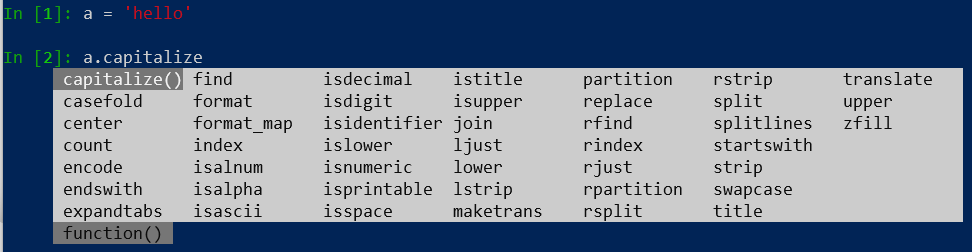

Python3中string内置参数原文出处:本文由博客园博主韩小星星提供。
原文连接:https://www.cnblogs.com/hanguoxing/p/11670401.html
说明:
使用ipython查看python3的内置函数 ，只需要输入字符串按两下tab键

- capitalize()：将字符串中第一个字符大写
- casefold：将字符串中的所有大写字母转为小写
- center(len,str): 返回一个 len长度的str，并使原有字符串居中
- count(str,begin, end): 返回字符串str出现的次数，可以使用开始和结束索引限定范围
- encode(encoding,errors): 返回一个bytes对象，原始字符串指定为encoding的编码格式
- endswitch(str,begin,end): 返回bool结果，判断是否已str结束，可以指定开始和结束索引
- expandtabs(tabsize=8): 把制度创新中tab转为空格(默认空格的tabsize = 8)
- find(str,begin,end): 查找str是否在字符串中，如果找到返回索引，查找不到返回-1， 可以指定开始和结束索引
- format: 字符串的格式化，字符串以{}作为占位符
- format_map({key:value}): 字符串格式化，以字典形式, 其中key值为占位符{key}
- index(str,begin,end): 查找str的索引，如果不存在则返回错误，可以指定开始和结束索引
- isalnum(): 如果字符串全由数字、字母、数字和字母组成 返回true
- isalpha(): 如果字符串至少有一个字符并且所有字符都是字母则返回 True
- isascii(): 是否为ascii码，判断时必须是字符串形式，或则报错
- isdecimal(): 可解释为十进制数字则返回True
- isdigit(): 是否全由数字组成，是则返回True
- isidentifier(): 用于判断字符串是否是有效的 Python 标识符，可用来判断变量名是否合法
- islower(): 判断字符串是否都是小写，是则返回True
- isnumeric(): 判断字符串是否只包含数字，是则返回True
- isprintable(): 判断字符串中所有字符是否都是可打印字符或字符串为空返回 True
Unicode字符集中“Other” “Separator”类别的字符为不可打印的字符（但不包括ASCII码中的空格（0x20））。可用于判断转义字符。
ASCII码中第0～32号及第127号是控制字符；第33～126号是可打印字符，其中第48～57号为0～9十个阿拉伯数字；65～90号为26个大写英文字母，97～122号为26个小写英文字母。
- isspace(): 判断字符串是空格，返回True
- istitle(): 如果字符串是标题化则返回True
- issupper(): 判断字符串都是为大写，返回True
- join(str): 字符串链接 连接元素str
- ljust(len): 返回原字符串左对齐，并且使用空格填充长度len的新字符串
- lower(): 将所有大写字符转为小写
- lstrip(): 截掉string左边的空格
- maketrans(in, out) : 创建字符映射的转换表(in:字符串要替代的字符，out:映射的字符串）
- partition(str): 用来根据指定的分隔符将字符串进行分割
- replace(str1,str2, len=count(str1))： 将字符串str1替换成str2， len表示最大替换次数
- rfind(str, begin,end): 查找字符串，从右边查找，并可以指定查找索引
- rindex(str,begin,end): 从右边查找索引，可以指定开始结束索引
- rjust(len)： 返回一个原字符串右对齐，并用空格填充到长度len的新字符串
- rpartition(str): 从右边按指定字符分割字符串
- rsplit(): 删除字符串末尾的空格
- rstrip():截掉字符串右边的空格
- split(str,len): 按照str对字符串进行切片，可以指定分割几个字符串len
- splitlines(): 按行分割字符串，返回列表，可以指定分割几个字符串
- startswith(str): 判断字符串是否以str开始
- strip() : 在字符串上执行l/r strip()
- swapcase(): 翻转字符串中的大小写
- title():将字符串标题化(所有单词大写开始，其余均小写)
- translate(str,del): 根据str给出的表转换字符串的字符，将要过滤掉的字符放到del中
- upper(): 将字符串中的小写转大写
- zfill(len): 返回长度为len的字符串，原始字符串右对齐，前面填充0